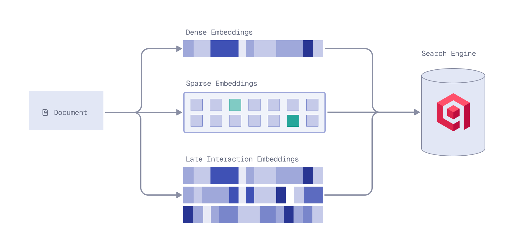
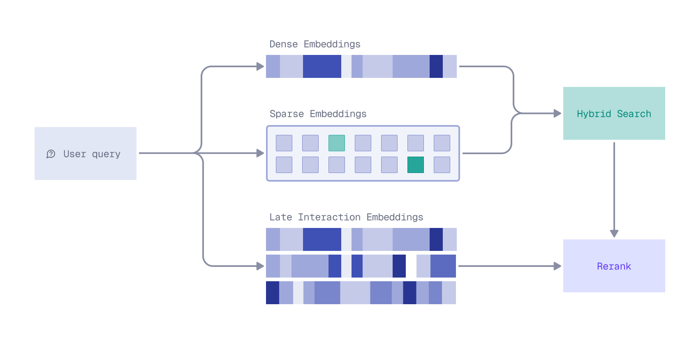

Qdrant Hybrid Search with Reranking
| Time: 40 min | Level: Intermediate |
|---|
Reranking is a powerful technique for improving search precision: rather than running an expensive model over your entire corpus, you apply it to a smaller set of candidates already retrieved by a faster method. This keeps latency low while surfacing the most relevant results.
Reranking pairs especially well with hybrid search, which casts a wide retrieval net, maximizing recall across several retrieval paths. Reranking can sort the hybrid search results with a deeper relevance signal. A late interaction model, for instance, represents both query and document as multiple vectors, enabling more nuanced term-level comparisons than a single embedding can capture.
In this tutorial, you’ll learn how to build a hybrid search engine that uses dense embeddings for semantic search, sparse embeddings for keyword search, and late interaction embeddings for reranking. The result is a powerful search engine that delivers highly relevant results by combining the strengths of different embedding types.
You’ll use Qdrant Cloud Inference to generate vector embeddings. The three embedding models used in this tutorial (dense, sparse, and late interaction) are available free of charge on Qdrant Cloud. If you prefer to manage your own embedding infrastructure, you can apply the same principles, but you will need to adapt the code examples to use your embedding service.
Overview
Let’s start by breaking down the architecture:
Ingestion Stage

You’ll start by ingesting a CSV file containing information about science fiction books. Each row is a document, corresponding to a book, with fields for the title, author, and description. Each book description will be processed to generate three types of embeddings:
- Dense embeddings capture the deeper, semantic meanings behind the text.
- Sparse embeddings support more traditional, keyword-based methods. Specifically, you’ll use BM25, a probabilistic retrieval model. BM25 ranks documents based on how relevant their terms are to a given query, taking into account how often terms appear, document length, and how common the term is across all documents. It’s perfect for keyword-heavy searches.
- Late interaction embeddings capture the nuanced interactions between query and document terms. You’ll use a ColBERT model, which uses a two-stage approach. First, it generates contextualized embeddings for both queries and documents using BERT, and then it performs late interaction, matching those embeddings efficiently to fine-tune relevance. Learn more about late interaction models in the Multivector Representations for Reranking in Qdrant tutorial and the Multi-Vector Search course.
The data, including all the embeddings, is stored in Qdrant, a vector search engine. This enables you to efficiently search, retrieve, and rerank your documents based on multiple layers of relevance.
Retrieval Stage

When a user submits a query, it is, just like documents, transformed into each of the types of embeddings: dense for semantic search, sparse for keyword search, and late interaction for precise reranking.
Next, hybrid search uses dense and sparse embeddings to find the most relevant documents. The dense embeddings are used for semantic search, while the sparse embeddings are used for keyword search. The resulting sets of documents are then reranked using late interaction embeddings, giving results that are not only relevant but also tuned to your query by prioritizing the documents that truly meet the user’s intent.
Implementation
Install and Initialize the Qdrant Client
First, install the Qdrant client:
qdrant-client
qdrant/js-client-rest
qdrant-client
io.qdrant:client
Qdrant.Client
github.com/qdrant/go-client
Next, initialize the client:
from qdrant_client import QdrantClient
client = QdrantClient(
url="https://xyz-example.eu-central.aws.cloud.qdrant.io:6333",
api_key="<your-api-key>",
cloud_inference=True,
)
const client = new QdrantClient({
url: QDRANT_URL,
apiKey: QDRANT_API_KEY,
});
let client = Qdrant::from_url(qdrant_url)
.api_key(qdrant_api_key)
.build()?;
QdrantClient client =
new QdrantClient(
QdrantGrpcClient.newBuilder(QDRANT_URL, 6334, true)
.withApiKey(QDRANT_API_KEY)
.build());
var client = new QdrantClient(
host: QDRANT_URL,
https: true,
apiKey: QDRANT_API_KEY
);
client, err := qdrant.NewClient(&qdrant.Config{
Host: QDRANT_URL,
APIKey: QDRANT_API_KEY,
UseTLS: true,
})
Models
Next, define the three embedding models. You’ll use the 384-dimensional sentence-transformers/all-MiniLM-L6-v2 model for dense embeddings, the qdrant/bm25 model for sparse embeddings, and the 96-dimensional answerdotai/answerai-colbert-small-v1 multivector model for late interaction embeddings.
dense_embedding_model = "sentence-transformers/all-MiniLM-L6-v2"
sparse_embedding_model = "qdrant/bm25"
late_interaction_embedding_model = "answerdotai/answerai-colbert-small-v1"
const denseEmbeddingModel = "sentence-transformers/all-MiniLM-L6-v2";
const sparseEmbeddingModel = "qdrant/bm25";
const lateInteractionEmbeddingModel = "answerdotai/answerai-colbert-small-v1";
let dense_embedding_model = "sentence-transformers/all-MiniLM-L6-v2";
let sparse_embedding_model = "qdrant/bm25";
let late_interaction_embedding_model = "answerdotai/answerai-colbert-small-v1";
String denseEmbeddingModel = "sentence-transformers/all-MiniLM-L6-v2";
String sparseEmbeddingModel = "qdrant/bm25";
String lateInteractionEmbeddingModel = "answerdotai/answerai-colbert-small-v1";
string denseEmbeddingModel = "sentence-transformers/all-MiniLM-L6-v2";
string sparseEmbeddingModel = "qdrant/bm25";
string lateInteractionEmbeddingModel = "answerdotai/answerai-colbert-small-v1";
denseEmbeddingModel := "sentence-transformers/all-MiniLM-L6-v2"
sparseEmbeddingModel := "qdrant/bm25"
lateInteractionEmbeddingModel := "answerdotai/answerai-colbert-small-v1"
Create Collection
Create a new collection called hybrid-search, configured to handle the three vector types:
- Dense embeddings (
dense) using cosine distance for semantic comparisons. - Late interaction embeddings (
multi) using cosine distance, with a multivector configuration using the maximum similarity comparator. Note them=0configuration to disable HNSW indexing. These embeddings are used for reranking, not ANN retrieval, so an HNSW index is not needed. - Sparse embeddings (
sparse) for keyword-based searches using the IDF modifier.
from qdrant_client.models import Distance, VectorParams, models
collection_name = "hybrid-search"
if client.collection_exists(collection_name=collection_name):
client.delete_collection(collection_name=collection_name)
client.create_collection(
collection_name,
vectors_config={
"dense": models.VectorParams(
size=384,
distance=models.Distance.COSINE,
),
"multi": models.VectorParams(
size=96,
distance=models.Distance.COSINE,
multivector_config=models.MultiVectorConfig(
comparator=models.MultiVectorComparator.MAX_SIM,
),
hnsw_config=models.HnswConfigDiff(m=0) # Disable HNSW for reranking
),
},
sparse_vectors_config={
"sparse": models.SparseVectorParams(modifier=models.Modifier.IDF)
}
)
const collectionName = "hybrid-search";
if (await client.collectionExists(collectionName)) {
await client.deleteCollection(collectionName);
}
await client.createCollection(collectionName, {
vectors: {
dense: {
size: 384,
distance: "Cosine",
},
multi: {
size: 96,
distance: "Cosine",
multivector_config: { comparator: "max_sim" },
hnsw_config: { m: 0 }, // Disable HNSW for reranking
},
},
sparse_vectors: {
sparse: { modifier: "idf" },
},
});
let collection_name = "hybrid-search";
if client.collection_exists(collection_name).await? {
client.delete_collection(collection_name).await?;
}
let mut vectors = VectorsConfigBuilder::default();
vectors.add_named_vector_params(
"dense",
VectorParamsBuilder::new(384, Distance::Cosine),
);
vectors.add_named_vector_params(
"multi",
VectorParamsBuilder::new(96, Distance::Cosine)
.multivector_config(MultiVectorConfigBuilder::new(MultiVectorComparator::MaxSim))
.hnsw_config(HnswConfigDiffBuilder::default().m(0)), // Disable HNSW for reranking
);
let mut sparse = SparseVectorsConfigBuilder::default();
sparse.add_named_vector_params(
"sparse",
SparseVectorParamsBuilder::default().modifier(Modifier::Idf),
);
client
.create_collection(
CreateCollectionBuilder::new(collection_name)
.vectors_config(vectors)
.sparse_vectors_config(sparse),
)
.await?;
String collectionName = "hybrid-search";
if (client.collectionExistsAsync(collectionName).get()) {
client.deleteCollectionAsync(collectionName).get();
}
client.createCollectionAsync(
CreateCollection.newBuilder()
.setCollectionName(collectionName)
.setVectorsConfig(
VectorsConfig.newBuilder()
.setParamsMap(
VectorParamsMap.newBuilder()
.putMap(
"dense",
VectorParams.newBuilder()
.setSize(384)
.setDistance(Distance.Cosine)
.build())
.putMap(
"multi",
VectorParams.newBuilder()
.setSize(96)
.setDistance(Distance.Cosine)
.setMultivectorConfig(
MultiVectorConfig.newBuilder()
.setComparator(MultiVectorComparator.MaxSim)
.build())
.setHnswConfig(
HnswConfigDiff.newBuilder()
.setM(0) // Disable HNSW for reranking
.build())
.build())
.build()))
.setSparseVectorsConfig(
SparseVectorConfig.newBuilder()
.putMap(
"sparse",
SparseVectorParams.newBuilder()
.setModifier(Modifier.Idf)
.build())
.build())
.build()
).get();
string collectionName = "hybrid-search";
if (await client.CollectionExistsAsync(collectionName))
await client.DeleteCollectionAsync(collectionName);
await client.CreateCollectionAsync(
collectionName: collectionName,
vectorsConfig: new VectorParamsMap
{
Map =
{
["dense"] = new VectorParams
{
Size = 384,
Distance = Distance.Cosine,
},
["multi"] = new VectorParams
{
Size = 96,
Distance = Distance.Cosine,
MultivectorConfig = new() { Comparator = MultiVectorComparator.MaxSim },
HnswConfig = new HnswConfigDiff { M = 0 }, // Disable HNSW for reranking
},
}
},
sparseVectorsConfig: new SparseVectorConfig
{
Map =
{
["sparse"] = new SparseVectorParams { Modifier = Modifier.Idf }
}
}
);
collectionName := "hybrid-search"
exists, err := client.CollectionExists(context.Background(), collectionName)
if exists {
client.DeleteCollection(context.Background(), collectionName)
}
client.CreateCollection(context.Background(), &qdrant.CreateCollection{
CollectionName: collectionName,
VectorsConfig: qdrant.NewVectorsConfigMap(
map[string]*qdrant.VectorParams{
"dense": {
Size: 384,
Distance: qdrant.Distance_Cosine,
},
"multi": {
Size: 96,
Distance: qdrant.Distance_Cosine,
MultivectorConfig: &qdrant.MultiVectorConfig{
Comparator: qdrant.MultiVectorComparator_MaxSim,
},
HnswConfig: &qdrant.HnswConfigDiff{M: qdrant.PtrOf(uint64(0))}, // Disable HNSW for reranking
},
},
),
SparseVectorsConfig: qdrant.NewSparseVectorsConfig(
map[string]*qdrant.SparseVectorParams{
"sparse": {Modifier: qdrant.Modifier_Idf.Enum()},
},
),
})
Ingest Data
Now you can load the sci-fi book descriptions from a CSV and insert them into the hybrid-search collection. With Cloud Inference, embeddings are computed server-side by wrapping the text in a Document object.
from qdrant_client.models import Document, PointStruct
csv_url = 'https://raw.githubusercontent.com/qdrant/examples/refs/heads/master/sci-fi-books/top_100_scifi_books_full.csv'
points = (
PointStruct(
id=idx,
vector={
"dense": Document(text=row['Description'], model=dense_embedding_model),
"sparse": Document(text=row['Description'], model=sparse_embedding_model),
"multi": Document(text=row['Description'], model=late_interaction_embedding_model),
},
payload={"title": row['Title'], "author": row['Author'], "description": row['Description']}
)
for idx, row in enumerate(parse_csv(csv_url))
)
client.upload_points(
collection_name=collection_name,
points=points,
batch_size=25
)
const csvUrl = "https://raw.githubusercontent.com/qdrant/examples/refs/heads/master/sci-fi-books/top_100_scifi_books_full.csv";
const batchSize = 25;
let idx = 0;
let buffer: Schemas["PointStruct"][] = [];
for await (const { title, author, description } of parseCSV(csvUrl)) {
buffer.push({
id: idx++,
vector: {
dense: { text: description, model: denseEmbeddingModel },
sparse: { text: description, model: sparseEmbeddingModel },
multi: { text: description, model: lateInteractionEmbeddingModel },
},
payload: { title, author, description },
});
if (buffer.length >= batchSize) {
await client.upsert(collectionName, { points: buffer });
buffer = [];
}
}
if (buffer.length > 0) {
await client.upsert(collectionName, { points: buffer });
}
let csv_url = "https://raw.githubusercontent.com/qdrant/examples/refs/heads/master/sci-fi-books/top_100_scifi_books_full.csv";
let batch_size = 25;
let mut idx: u64 = 0;
let mut buffer: Vec<PointStruct> = Vec::new();
for row in parse_csv(csv_url)? {
let row = row?;
let title = row.title;
let author = row.author;
let description = row.description;
let vectors = NamedVectors::default()
.add_vector("dense", Document::new(&description, dense_embedding_model))
.add_vector("sparse", Document::new(&description, sparse_embedding_model))
.add_vector("multi", Document::new(&description, late_interaction_embedding_model));
buffer.push(PointStruct::new(
idx,
vectors,
[
("title", title.into()),
("author", author.into()),
("description", description.into()),
],
));
idx += 1;
if buffer.len() >= batch_size {
client
.upsert_points(UpsertPointsBuilder::new(
collection_name,
std::mem::take(&mut buffer),
))
.await?;
}
}
if !buffer.is_empty() {
client
.upsert_points(UpsertPointsBuilder::new(collection_name, buffer))
.await?;
}
String csvUrl = "https://raw.githubusercontent.com/qdrant/examples/refs/heads/master/sci-fi-books/top_100_scifi_books_full.csv";
int batchSize = 25;
long idx = 0;
List<PointStruct> buffer = new ArrayList<>();
try (var stream = parseCSV(csvUrl)) {
for (var row : (Iterable<CsvRow>) stream::iterator) {
String title = row.title;
String author = row.author;
String description = row.description;
buffer.add(
PointStruct.newBuilder()
.setId(io.qdrant.client.PointIdFactory.id(idx++))
.setVectors(
namedVectors(
Map.of(
"dense",
vector(
Document.newBuilder()
.setText(description)
.setModel(denseEmbeddingModel)
.build()),
"sparse",
vector(
Document.newBuilder()
.setText(description)
.setModel(sparseEmbeddingModel)
.build()),
"multi",
vector(
Document.newBuilder()
.setText(description)
.setModel(lateInteractionEmbeddingModel)
.build()))))
.putAllPayload(
Map.of(
"title", value(title),
"author", value(author),
"description", value(description)))
.build());
if (buffer.size() >= batchSize) {
client.upsertAsync(collectionName, buffer).get();
buffer.clear();
}
}
}
if (!buffer.isEmpty()) {
client.upsertAsync(collectionName, buffer).get();
}
string csvUrl = "https://raw.githubusercontent.com/qdrant/examples/refs/heads/master/sci-fi-books/top_100_scifi_books_full.csv";
int batchSize = 25;
ulong idx = 0;
var buffer = new List<PointStruct>();
await foreach (var (title, author, description) in ParseCsv(csvUrl))
{
buffer.Add(new PointStruct
{
Id = idx++,
Vectors = new Dictionary<string, Vector>
{
["dense"] = new Document { Text = description, Model = denseEmbeddingModel },
["sparse"] = new Document { Text = description, Model = sparseEmbeddingModel },
["multi"] = new Document { Text = description, Model = lateInteractionEmbeddingModel },
},
Payload = { ["title"] = title, ["author"] = author, ["description"] = description }
});
if (buffer.Count >= batchSize)
{
await client.UpsertAsync(collectionName: collectionName, points: buffer);
buffer.Clear();
}
}
if (buffer.Count > 0)
await client.UpsertAsync(collectionName: collectionName, points: buffer);
csvUrl := "https://raw.githubusercontent.com/qdrant/examples/refs/heads/master/sci-fi-books/top_100_scifi_books_full.csv"
batchSize := 25
var idx uint64
var buffer []*qdrant.PointStruct
err = parseCSV(csvUrl, func(row CSVRow) {
title := row.Title
author := row.Author
description := row.Description
buffer = append(buffer, &qdrant.PointStruct{
Id: qdrant.NewIDNum(idx),
Vectors: qdrant.NewVectorsMap(map[string]*qdrant.Vector{
"dense": qdrant.NewVectorDocument(&qdrant.Document{Text: description, Model: denseEmbeddingModel}),
"sparse": qdrant.NewVectorDocument(&qdrant.Document{Text: description, Model: sparseEmbeddingModel}),
"multi": qdrant.NewVectorDocument(&qdrant.Document{Text: description, Model: lateInteractionEmbeddingModel}),
}),
Payload: qdrant.NewValueMap(map[string]any{
"title": title,
"author": author,
"description": description,
}),
})
idx++
if len(buffer) >= batchSize {
client.Upsert(context.Background(), &qdrant.UpsertPoints{
CollectionName: collectionName,
Points: buffer,
})
buffer = nil
}
})
if len(buffer) > 0 {
client.Upsert(context.Background(), &qdrant.UpsertPoints{
CollectionName: collectionName,
Points: buffer,
})
}
This code creates a point for each book, with three vector types and a payload containing the title, author, and description. Documents are uploaded to Qdrant in batches of 25, with Cloud Inference generating all three embeddings on the fly. In Production, the optimal batch size depends on your data and cluster, so you may want to experiment with different sizes for best performance.
This code uses a helper function to stream and parse the CSV file:
Details
import csv
import urllib.request
def parse_csv(url):
with urllib.request.urlopen(url) as response:
reader = csv.DictReader(line.decode('utf-8') for line in response)
yield from reader
function parseCsvLine(line: string): string[] {
const fields: string[] = [];
let i = 0;
while (i < line.length) {
if (line[i] === '"') {
i++;
let field = "";
while (i < line.length) {
if (line[i] === '"' && line[i + 1] === '"') { field += '"'; i += 2; }
else if (line[i] === '"') { i++; break; }
else { field += line[i++]; }
}
fields.push(field);
if (line[i] === ",") i++;
} else {
const start = i;
while (i < line.length && line[i] !== ",") i++;
fields.push(line.slice(start, i));
if (i < line.length) i++;
}
}
return fields;
}
async function* parseCSV(url: string): AsyncGenerator<{ text: string; datetime: string }> {
const response = await fetch(url);
const reader = response.body!.getReader();
const decoder = new TextDecoder();
let remainder = "";
let headers: string[] | null = null;
let textIdx = -1;
let datetimeIdx = -1;
while (true) {
const { done, value } = await reader.read();
const chunk = done ? "" : decoder.decode(value, { stream: true });
const lines = (remainder + chunk).split("\n");
remainder = done ? "" : lines.pop()!;
for (const line of lines) {
if (!line.trim()) continue;
if (headers === null) {
headers = line.split(",");
textIdx = headers.indexOf("text");
datetimeIdx = headers.indexOf("datetime");
continue;
}
const fields = parseCsvLine(line);
yield { text: fields[textIdx], datetime: fields[datetimeIdx] };
}
if (done) break;
}
}
struct CsvRow {
text: String,
datetime: String,
}
fn parse_csv(url: &str) -> anyhow::Result<impl Iterator<Item = anyhow::Result<CsvRow>>> {
let reader = ureq::get(url).call()?.into_body().into_reader();
let mut rdr = csv::Reader::from_reader(reader);
let headers = rdr.headers()?.clone();
let text_idx = headers.iter().position(|h| h == "text").unwrap();
let datetime_idx = headers.iter().position(|h| h == "datetime").unwrap();
let iter = rdr.into_records().map(move |result| {
let record = result?;
Ok(CsvRow {
text: record[text_idx].to_string(),
datetime: record[datetime_idx].to_string(),
})
});
Ok(iter)
}
static class CsvRow {
final String text;
final String datetime;
CsvRow(String text, String datetime) { this.text = text; this.datetime = datetime; }
}
static Stream<CsvRow> parseCSV(String url) throws Exception {
Function<String, List<String>> parseCsvLine = line -> {
List<String> fields = new ArrayList<>();
boolean inQuotes = false;
var sb = new StringBuilder();
for (char c : line.toCharArray()) {
if (c == '"') {
inQuotes = !inQuotes;
} else if (c == ',' && !inQuotes) {
fields.add(sb.toString());
sb.setLength(0);
} else {
sb.append(c);
}
}
fields.add(sb.toString());
return fields;
};
var reader = new BufferedReader(new InputStreamReader(new URL(url).openStream()));
String headerLine = reader.readLine();
List<String> headers = List.of(headerLine.split(","));
int textIdx = headers.indexOf("text");
int datetimeIdx = headers.indexOf("datetime");
return reader.lines()
.map(line -> {
List<String> fields = parseCsvLine.apply(line);
return new CsvRow(fields.get(textIdx), fields.get(datetimeIdx));
})
.onClose(() -> { try { reader.close(); } catch (Exception ignored) {} });
}
async IAsyncEnumerable<(string text, string datetime)> ParseCsv(string url)
{
using var httpClient = new HttpClient();
using var stream = await httpClient.GetStreamAsync(url);
using var parser = new TextFieldParser(new StreamReader(stream));
parser.TextFieldType = Microsoft.VisualBasic.FileIO.FieldType.Delimited;
parser.SetDelimiters(",");
string[]? headers = parser.ReadFields();
int textIdx = Array.IndexOf(headers!, "text");
int datetimeIdx = Array.IndexOf(headers!, "datetime");
while (!parser.EndOfData)
{
var fields = parser.ReadFields()!;
yield return (fields[textIdx], fields[datetimeIdx]);
}
}
type CSVRow struct {
Text string
Datetime string
}
func parseCSV(url string, fn func(CSVRow)) error {
resp, err := http.Get(url)
if err != nil {
return err
}
defer resp.Body.Close()
csvReader := csv.NewReader(resp.Body)
headers, err := csvReader.Read()
if err != nil {
return err
}
textIdx, datetimeIdx := -1, -1
for i, h := range headers {
switch h {
case "text":
textIdx = i
case "datetime":
datetimeIdx = i
}
}
for {
row, err := csvReader.Read()
if err == io.EOF {
break
}
if err != nil {
return err
}
fn(CSVRow{Text: row[textIdx], Datetime: row[datetimeIdx]})
}
return nil
}
Retrieval
Before combining results, let’s see how dense and sparse retrieval perform individually.
For retrieval, wrap the query in a Document object so Cloud Inference computes the appropriate embeddings server-side.
Dense retrieval captures semantic meaning:
import pprint
query = "time travel"
results = client.query_points(
collection_name,
query=models.Document(text=query, model=dense_embedding_model),
using="dense",
limit=10,
)
pprint.pp(results.points)
const query = "time travel";
const denseResults = await client.query(collectionName, {
query: { text: query, model: denseEmbeddingModel },
using: "dense",
limit: 10,
});
console.log(denseResults.points);
let query = "time travel";
let results = client
.query(
QueryPointsBuilder::new(collection_name)
.query(Query::new_nearest(Document::new(query, dense_embedding_model)))
.using("dense")
.limit(10),
)
.await?;
for result in results.result {
println!("{:?}", result);
}
String query = "time travel";
var results = client.queryAsync(
QueryPoints.newBuilder()
.setCollectionName(collectionName)
.setQuery(
nearest(
Document.newBuilder()
.setText(query)
.setModel(denseEmbeddingModel)
.build()))
.setUsing("dense")
.setLimit(10)
.build()
).get();
for (var result : results) {
System.out.println(result);
}
string query = "time travel";
var results = await client.QueryAsync(
collectionName: collectionName,
query: new Document { Text = query, Model = denseEmbeddingModel },
usingVector: "dense",
limit: 10
);
foreach (var result in results)
Console.WriteLine(result);
query := "time travel"
results, err := client.Query(context.Background(), &qdrant.QueryPoints{
CollectionName: collectionName,
Query: qdrant.NewQueryDocument(&qdrant.Document{
Text: query,
Model: denseEmbeddingModel,
}),
Using: qdrant.PtrOf("dense"),
Limit: qdrant.PtrOf(uint64(10)),
})
for _, result := range results {
fmt.Println(result)
}
Let’s take a look at the top 5 results:
| Position | Title | Description |
|---|---|---|
| 1 | The Time Machine | A Victorian scientist travels far into the future to witness civilization’s fate. |
| 2 | Slaughterhouse-Five | A nonlinear, time-tripping reflection on war and fate. |
| 3 | The Peripheral | Two timelines intersect through telepresence technology. |
| 4 | The Space Between Worlds | A multiverse traveler uncovers dangerous secrets across parallel Earths. |
| 5 | The Forever War | A soldier experiences extreme time dilation while fighting an interstellar war. |
Each of these books has a strong semantic connection to the concept of time travel, even if the exact phrase doesn’t appear in the description.
Sparse retrieval focuses on keyword matches:
results = client.query_points(
collection_name,
query=models.Document(text=query, model=sparse_embedding_model),
using="sparse",
limit=10,
)
pprint.pp(results.points)
const sparseResults = await client.query(collectionName, {
query: { text: query, model: sparseEmbeddingModel },
using: "sparse",
limit: 10,
});
console.log(sparseResults.points);
let results = client
.query(
QueryPointsBuilder::new(collection_name)
.query(Query::new_nearest(Document::new(query, sparse_embedding_model)))
.using("sparse")
.limit(10),
)
.await?;
for result in results.result {
println!("{:?}", result);
}
results = client.queryAsync(
QueryPoints.newBuilder()
.setCollectionName(collectionName)
.setQuery(
nearest(
Document.newBuilder()
.setText(query)
.setModel(sparseEmbeddingModel)
.build()))
.setUsing("sparse")
.setLimit(10)
.build()
).get();
for (var result : results) {
System.out.println(result);
}
results = await client.QueryAsync(
collectionName: collectionName,
query: new Document { Text = query, Model = sparseEmbeddingModel },
usingVector: "sparse",
limit: 10
);
foreach (var result in results)
Console.WriteLine(result);
results, err = client.Query(context.Background(), &qdrant.QueryPoints{
CollectionName: collectionName,
Query: qdrant.NewQueryDocument(&qdrant.Document{
Text: query,
Model: sparseEmbeddingModel,
}),
Using: qdrant.PtrOf("sparse"),
Limit: qdrant.PtrOf(uint64(10)),
})
for _, result := range results {
fmt.Println(result)
}
The top 5 results are:
| Position | Title | Description |
|---|---|---|
| 1 | Station Eleven | A traveling symphony roams a post-pandemic North America. |
| 2 | Hyperion | Travelers share haunting tales on a pilgrimage to confront the mysterious Shrike. |
| 3 | The Space Between Worlds | A multiverse traveler uncovers dangerous secrets across parallel Earths. |
| 4 | The Time Machine | A Victorian scientist travels far into the future to witness civilization’s fate. |
| 5 | Slaughterhouse-Five | A nonlinear, time-tripping reflection on war and fate. |
The sparse BM25 model performs keyword matching with stemming. As a result, it returns books whose descriptions contain variants of the words “time” and “travel”. For instance, “Station Eleven” and “Hyperion” mention “traveling” and “travelers” but aren’t primarily about time travel.
Hybrid search can be used to prefetch the dense and sparse results and next merge them using Reciprocal Rank Fusion (RRF):
prefetch = [
models.Prefetch(
query=models.Document(text=query, model=dense_embedding_model),
using="dense",
limit=20,
),
models.Prefetch(
query=models.Document(text=query, model=sparse_embedding_model),
using="sparse",
limit=20,
),
]
results = client.query_points(
collection_name,
prefetch=prefetch,
query=models.FusionQuery(fusion=models.Fusion.RRF),
with_payload=True,
limit=10,
)
pprint.pp(results.points)
const hybridResults = await client.query(collectionName, {
prefetch: [
{
query: { text: query, model: denseEmbeddingModel },
using: "dense",
limit: 20,
},
{
query: { text: query, model: sparseEmbeddingModel },
using: "sparse",
limit: 20,
},
],
query: { fusion: "rrf" },
with_payload: true,
limit: 10,
});
console.log(hybridResults.points);
let results = client
.query(
QueryPointsBuilder::new(collection_name)
.add_prefetch(
PrefetchQueryBuilder::default()
.query(Query::new_nearest(Document::new(query, dense_embedding_model)))
.using("dense")
.limit(20u64),
)
.add_prefetch(
PrefetchQueryBuilder::default()
.query(Query::new_nearest(Document::new(query, sparse_embedding_model)))
.using("sparse")
.limit(20u64),
)
.query(Query::new_fusion(Fusion::Rrf))
.with_payload(true)
.limit(10),
)
.await?;
for result in results.result {
println!("{:?}", result);
}
results = client.queryAsync(
QueryPoints.newBuilder()
.setCollectionName(collectionName)
.addPrefetch(
PrefetchQuery.newBuilder()
.setQuery(
nearest(
Document.newBuilder()
.setText(query)
.setModel(denseEmbeddingModel)
.build()))
.setUsing("dense")
.setLimit(20)
.build())
.addPrefetch(
PrefetchQuery.newBuilder()
.setQuery(
nearest(
Document.newBuilder()
.setText(query)
.setModel(sparseEmbeddingModel)
.build()))
.setUsing("sparse")
.setLimit(20)
.build())
.setQuery(Query.newBuilder().setFusion(Fusion.RRF).build())
.setWithPayload(enable(true))
.setLimit(10)
.build()
).get();
for (var result : results) {
System.out.println(result);
}
results = await client.QueryAsync(
collectionName: collectionName,
prefetch: new List<PrefetchQuery>
{
new()
{
Query = new Document { Text = query, Model = denseEmbeddingModel },
Using = "dense",
Limit = 20,
},
new()
{
Query = new Document { Text = query, Model = sparseEmbeddingModel },
Using = "sparse",
Limit = 20,
},
},
query: Fusion.Rrf,
payloadSelector: true,
limit: 10
);
foreach (var result in results)
Console.WriteLine(result);
results, err = client.Query(context.Background(), &qdrant.QueryPoints{
CollectionName: collectionName,
Prefetch: []*qdrant.PrefetchQuery{
{
Query: qdrant.NewQueryDocument(&qdrant.Document{
Text: query,
Model: denseEmbeddingModel,
}),
Using: qdrant.PtrOf("dense"),
Limit: qdrant.PtrOf(uint64(20)),
},
{
Query: qdrant.NewQueryDocument(&qdrant.Document{
Text: query,
Model: sparseEmbeddingModel,
}),
Using: qdrant.PtrOf("sparse"),
Limit: qdrant.PtrOf(uint64(20)),
},
},
Query: qdrant.NewQueryFusion(qdrant.Fusion_RRF),
WithPayload: qdrant.NewWithPayload(true),
Limit: qdrant.PtrOf(uint64(10)),
})
for _, result := range results {
fmt.Println(result)
}
This runs two sub-queries in parallel: one using dense embeddings for semantic meaning, the other using sparse BM25 embeddings for keyword matching. The prefetch step retrieves the top 20 candidates from each sub-query (dense and sparse) and fuses the ranked lists into a single result using RRF.
The results are a mix of books that are semantically relevant to time travel and those that contain the keywords, giving you a broader set of relevant documents. However, the ranking may not be optimal since, by default, RRF treats both signals equally and doesn’t capture the nuanced interactions between query and document terms. For example, “Station Eleven” ranks highly because it has stronger keyword matches, even though it is not about time travel.
| Position | Title | Description |
|---|---|---|
| 1 | The Time Machine | A Victorian scientist travels far into the future to witness civilization’s fate. |
| 2 | Station Eleven | A traveling symphony roams a post-pandemic North America. |
| 3 | Slaughterhouse-Five | A nonlinear, time-tripping reflection on war and fate. |
| 4 | The Space Between Worlds | A multiverse traveler uncovers dangerous secrets across parallel Earths. |
| 5 | Hyperion | Travelers share haunting tales on a pilgrimage to confront the mysterious Shrike. |
Rerank
The hybrid search results can be reranked using late interaction embeddings for maximum precision. Instead of fusing with RRF, use the ColBERT multi-vector as the final ranking signal:
prefetch = [
models.Prefetch(
query=models.Document(text=query, model=dense_embedding_model),
using="dense",
limit=20,
),
models.Prefetch(
query=models.Document(text=query, model=sparse_embedding_model),
using="sparse",
limit=20,
),
]
results = client.query_points(
collection_name,
prefetch=prefetch,
query=models.Document(text=query, model=late_interaction_embedding_model),
using="multi",
with_payload=True,
limit=10,
)
pprint.pp(results.points)
const rerankedResults = await client.query(collectionName, {
prefetch: [
{
query: { text: query, model: denseEmbeddingModel },
using: "dense",
limit: 20,
},
{
query: { text: query, model: sparseEmbeddingModel },
using: "sparse",
limit: 20,
},
],
query: { text: query, model: lateInteractionEmbeddingModel },
using: "multi",
with_payload: true,
limit: 10,
});
console.log(rerankedResults.points);
let results = client
.query(
QueryPointsBuilder::new(collection_name)
.add_prefetch(
PrefetchQueryBuilder::default()
.query(Query::new_nearest(Document::new(query, dense_embedding_model)))
.using("dense")
.limit(20u64),
)
.add_prefetch(
PrefetchQueryBuilder::default()
.query(Query::new_nearest(Document::new(query, sparse_embedding_model)))
.using("sparse")
.limit(20u64),
)
.query(Query::new_nearest(Document::new(query, late_interaction_embedding_model)))
.using("multi")
.with_payload(true)
.limit(10),
)
.await?;
for result in results.result {
println!("{:?}", result);
}
results = client.queryAsync(
QueryPoints.newBuilder()
.setCollectionName(collectionName)
.addPrefetch(
PrefetchQuery.newBuilder()
.setQuery(
nearest(
Document.newBuilder()
.setText(query)
.setModel(denseEmbeddingModel)
.build()))
.setUsing("dense")
.setLimit(20)
.build())
.addPrefetch(
PrefetchQuery.newBuilder()
.setQuery(
nearest(
Document.newBuilder()
.setText(query)
.setModel(sparseEmbeddingModel)
.build()))
.setUsing("sparse")
.setLimit(20)
.build())
.setQuery(
nearest(
Document.newBuilder()
.setText(query)
.setModel(lateInteractionEmbeddingModel)
.build()))
.setUsing("multi")
.setWithPayload(enable(true))
.setLimit(10)
.build()
).get();
for (var result : results) {
System.out.println(result);
}
results = await client.QueryAsync(
collectionName: collectionName,
prefetch: new List<PrefetchQuery>
{
new()
{
Query = new Document { Text = query, Model = denseEmbeddingModel },
Using = "dense",
Limit = 20,
},
new()
{
Query = new Document { Text = query, Model = sparseEmbeddingModel },
Using = "sparse",
Limit = 20,
},
},
query: new Document { Text = query, Model = lateInteractionEmbeddingModel },
usingVector: "multi",
payloadSelector: true,
limit: 10
);
foreach (var result in results)
Console.WriteLine(result);
results, err = client.Query(context.Background(), &qdrant.QueryPoints{
CollectionName: collectionName,
Prefetch: []*qdrant.PrefetchQuery{
{
Query: qdrant.NewQueryDocument(&qdrant.Document{
Text: query,
Model: denseEmbeddingModel,
}),
Using: qdrant.PtrOf("dense"),
Limit: qdrant.PtrOf(uint64(20)),
},
{
Query: qdrant.NewQueryDocument(&qdrant.Document{
Text: query,
Model: sparseEmbeddingModel,
}),
Using: qdrant.PtrOf("sparse"),
Limit: qdrant.PtrOf(uint64(20)),
},
},
Query: qdrant.NewQueryDocument(&qdrant.Document{
Text: query,
Model: lateInteractionEmbeddingModel,
}),
Using: qdrant.PtrOf("multi"),
WithPayload: qdrant.NewWithPayload(true),
Limit: qdrant.PtrOf(uint64(10)),
})
for _, result := range results {
fmt.Println(result)
}
The prefetch step retrieves the top 20 candidates from each sub-query (dense and sparse), and the ColBERT late interaction model reranks the combined candidates to surface the most relevant results.
Compare results
Let’s compare the top 10 results of hybrid search with and without reranking. Notice how some documents shift in rank based on their relevance according to the late interaction embeddings.
| Title | Description | Reranked | RRF rank | Rank Change |
|---|---|---|---|---|
| Slaughterhouse-Five | A nonlinear, time-tripping reflection on war and fate. | 1 | 3 | Moved up |
| The Forever War | A soldier experiences extreme time dilation while fighting an interstellar war. | 2 | 8 | Moved up |
| Kindred | A modern Black woman is pulled back in time to the antebellum South. | 3 | 7 | Moved up |
| Spin | Earth is enclosed in a time-distorting barrier by unknown forces. | 4 | 6 | Moved up |
| The Light Brigade | Soldiers are turned into light to fight a war across space-time. | 5 | 10 | Moved up |
Best Practices in Reranking
Reranking with late interaction models can dramatically improve the relevance of search results, especially when combined with hybrid search. Here are some best practices to keep in mind:
- Continuous testing and monitoring: regularly evaluate your hybrid search pipelines to avoid overfitting and make timely adjustments to maintain performance.
- Balance relevance and cost: Reranking can be computationally expensive, and late interaction embeddings require significant storage. Aim for a balance between relevance and cost. Simple fusion methods like RRF can be effective for many use cases, while late interaction models can be reserved for queries where precision is critical.
Conclusion
Reranking with late interaction models is a powerful tool that boosts the relevance of search results, especially when combined with hybrid search methods. While it can add some latency due to its complexity, applying it to a smaller, pre-filtered subset of results ensures both speed and relevance.